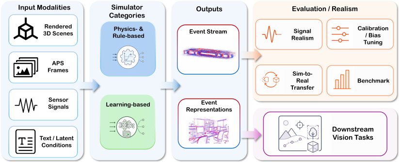

Comparison Questions
It compares methods by input source, event-generation assumptions, intended use, and supporting evidence.
This review provides a comprehensive and systematic survey centered on event-camera simulation, connecting how synthetic events are generated with how simulation realism and utility are evaluated.
It compares methods by input source, event-generation assumptions, intended use, and supporting evidence.
It defines two method families and five routes: threshold-based, sensor-aware, scene-level, direct, and conditional generation.
It reviews evidence from signal fidelity and parameter characterization to scene realism, downstream utility, and sim-to-real gap.

The overview connects input modalities, simulator categories, output forms, and the evaluation or downstream claims they support.
The category structure follows how events are generated. Physics- and rule-based methods keep the event-formation chain explicit, while learning-based methods learn mappings from input data to events or event representations.
Threshold-based, sensor-aware, and scene-level routes differ by model entry point while preserving an explicit event-formation chain.
Direct and conditional routes learn event streams or event representations from images, videos, latent variables, prompts, parameters, or control signals.

The framework summarizes the categories, routes, and four comparison questions used in the review.
The catalog below lists papers and public resources under mechanism-based categories used in the review.
physics- and rule-based resources
learning-based resources
evaluation and benchmark resources
pyDVS: An Extensible Real-Time Dynamic Vision Sensor Emulator
PIX2NVS: Parameterized Conversion of Pixel-Domain Video Frames to Neuromorphic Vision Streams
The Event-Camera Dataset and Simulator: Event-Based Data for Pose Estimation, Visual Odometry, and SLAM
ESIM: an Open Event Camera Simulator
CED: Color Event Camera Dataset
Video to Events: Recycling Video Datasets for Event Cameras
Event Camera Simulator Design for Modeling Attention-based Inference Architectures
Real-time Event Simulation with Frame-Based Cameras
I2E: Real-Time Image-to-Event Conversion for High-Performance Spiking Neural Networks
Reducing the Sim-to-Real Gap for Event Cameras
Event Camera Simulator Improvements via Characterized Parameters
v2e: From Video Frames to Realistic DVS Events
Enhanced Frame and Event-Based Simulator and Event-Based Video Interpolation Network
Accurate Event Simulation using High-Speed Videos
DVS-Voltmeter: Stochastic Process-Based Event Simulator for Dynamic Vision Sensors
ADV2E: Bridging the Gap Between Analogue Circuit and Discrete Frames in the Video-to-Events Simulator
Raw2Event: Converting Raw Frame Camera into Event Camera
Hybrid Event Frame Sensors: Modeling, Calibration, and Simulation
V2V: Scaling Event-Based Vision through Efficient Video-to-Voxel Simulation
Towards a Framework for End-to-End Control of a Simulated Vehicle with Spiking Neural Networks
InteriorNet: Mega-scale Multi-sensor Photo-realistic Indoor Scenes Dataset
Event-Based Camera Simulation Wrapper for Arcade Learning Environment
Generating Event-Based Datasets for Robotic Applications using MuJoCo-ESIM
Event-Based Camera Simulation Using Monte Carlo Path Tracing with Adaptive Denoising
BlinkFlow: A Dataset to Push the Limits of Event-based Optical Flow Estimation
Physical-Based Event Camera Simulator
Monte Carlo Path Tracing and Statistical Event Detection for Event Camera Simulation
Combined Physics and Event Camera Simulator for Slip Detection
An Event Camera Simulator for Arbitrary Viewpoints Based on Neural Radiance Fields
GS2E: Gaussian Splatting is an Effective Data Generator for Event Stream Generation
EventTracer: Fast Path Tracing-Based Event Stream Rendering
EREBUS: End-to-End Robust Event Based Underwater Simulation
Modelling and Simulation of Neuromorphic Datasets for Anomaly Detection in Computer Vision
CARLA DVS plugin
Microsoft AirSim Event Camera simulation plugin
Differentiable Event Stream Simulator for Non-Rigid 3D Tracking
How to Learn a Domain-Adaptive Event Simulator
SENPI: A PyTorch-Enabled Tool for Synthetic Event Camera Data Generation and Algorithm Development
EventGAN: Leveraging Large Scale Image Datasets for Event Cameras
Neural Implicit Event Generator for Motion Tracking
V2CE: Video to Continuous Events Simulator
EvDNeRF: Reconstructing Event Data with Dynamic Neural Radiance Fields
Reliable Event Generation With Invertible Conditional Normalizing Flow
Text-to-Events: Synthetic Event Camera Streams from Conditional Text Input
An Event-Oriented Diffusion-Refinement Method for Sparse Events Completion
ControlEvents: Controllable Synthesis of Event Camera Data with Foundational Prior from Image Diffusion Models
N-ROD: A Neuromorphic Dataset for Synthetic-to-Real Domain Adaptation
DA4Event: Towards Bridging the Sim-to-Real Gap for Event Cameras Using Domain Adaptation
BiasBench: A Reproducible Benchmark for Tuning the Biases of Event Cameras
Event Quality Score (EQS): Assessing the Realism of Simulated Event Camera Streams via Distances in Latent Space
How Real is CARLA's Dynamic Vision Sensor? A Study on the Sim-to-Real Gap in Traffic Object Detection
Evaluation depends on the claim being made. Signal statistics, fitted parameters, scene realism, downstream utility, and sim-to-real transfer provide distinct evidence layers.

The realism view separates device-level, scene-level, representation-level, downstream, and sim-to-real evidence.
If you find this work useful, please cite:
@misc{chen2026eventsim,
title={Event-Camera Simulation: A Review},
author={Langyi, Chen and Chuanzhi, Xu and Haoxian, Zhou and Haodong, Chen and Qiang, Qu and Weidong, Cai},
url={https://openreview.net/pdf?id=gal0rSykxm},
year={2026}
}